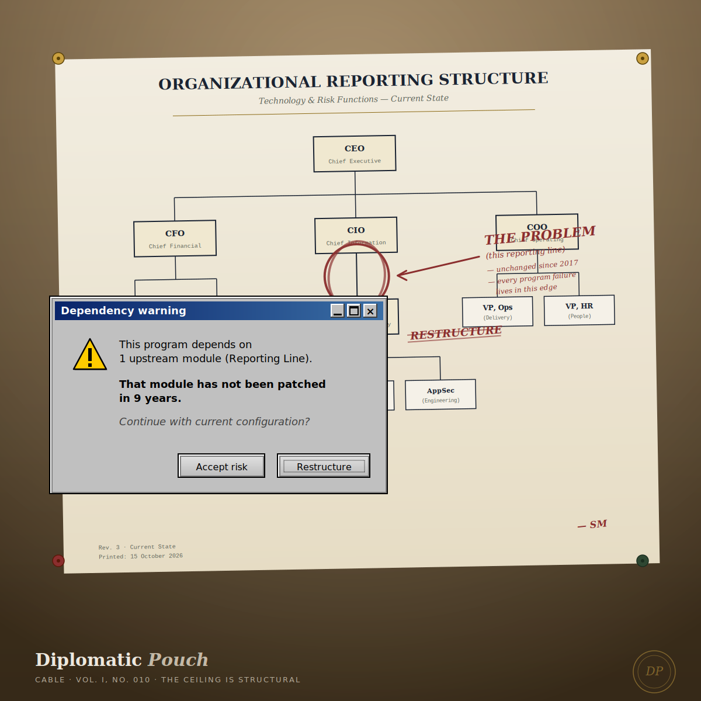

The Ceiling is Structural
What the Buffalo Bills' January restructure can teach us about CISO reporting lines — and what the five months since should teach us about acting on structural problems before they get worse.

In January, the Buffalo Bills fired their head coach. Sean McDermott had led the franchise for nine seasons. He had gone 98-50 in the regular season and made the playoffs eight times. He had won five consecutive AFC East titles. He had reached two AFC Championship Games. He had never reached the Super Bowl. Two days after losing 33-30 in overtime to the Denver Broncos in the Divisional Round, the owner made the call. General manager Brandon Beane was promoted to President of Football Operations. The offensive coordinator, Joe Brady, was later named the new head coach. The 2026 season has not yet started.
When the news broke I did not see a football team restructuring. I saw the exact same misalignment I have been paid to name inside enterprise security programs for years.
I want to write about that misalignment now, five months after the Bills made the audible, because the delay has actually clarified the argument. In January, this piece would have been a hot take. Now, with the benefit of watching what the Bills did and did not do next, it becomes something more useful: a case study in what it looks like when an organization finally admits that a persistent ceiling is not a talent problem or a coaching problem but a structural one.
Josh Allen is your CISO
In this playbook, Josh Allen is your CISO.
For readers outside the C-suite, the Chief Information Security Officer is the executive responsible for protecting an organization's data, infrastructure, and reputation. The correlation with an elite quarterback is closer than it looks. Both roles require field vision under extreme pressure. The QB surveys a defense to find the open receiver; the CISO surveys the threat landscape to identify vulnerabilities before the adversary does. When the defense shifts at the line of scrimmage, the QB changes the play; when a zero-day drops or a vendor is compromised, the CISO has to pivot the strategy in the seconds available. The QB's decisions determine the score. The CISO's decisions determine whether the business survives the quarter.
The Bills had an elite quarterback. He was the reigning MVP going into the 2025 season. He was arguably the most dynamic player in the league. And for nine seasons, no combination of talent around him could get the team past the Divisional Round. The ceiling was not Allen. The ceiling was structural.
I see the "Josh Allen CISO" in almost every engagement I take. They are brilliant, credentialed leaders — often with doctorates, often with decades of trench experience, often the most technically capable person in the room. They are also, more often than not, hamstrung by a single fatal structural flaw.
They are reporting to the CIO.
The conflict of interest
When a CISO reports to a CIO, an organization is asking its defensive coordinator to report to its offensive coordinator. This is a category error, and it is not a subtle one.
The CIO's mandate is speed, uptime, and feature delivery. They want the ball in the air. Their bonus is calibrated to velocity. Their promotion cycle depends on shipping. The CISO's mandate is resilience, governance, and risk reduction. Their job is to ensure the line holds. The tension between these two functions is not a bug in enterprise architecture. It is the entire reason both roles exist. Making one report to the other collapses the tension into a single voice, and the voice that gets kept is the one aligned with the reporting chain, not the one aligned with the actual risk.
This misalignment plays out differently depending on the business, but the compromised defense looks the same at the end.
In a product company, it becomes the speed trap. Offense is shipping features. When the CISO reports to the CTO, product security becomes secondary. It gets treated as friction — a penalty flag that slows the drive. Security tickets get pushed to the backlog in favor of "shipping the MVP." Vulnerabilities are accepted as technical debt that rarely gets paid down. The next breach is a paragraph in the post-mortem about "known issues that were deprioritized."
In a service company, it becomes the compliance trap. The game is about margins and client delivery. Here, a buried CISO often becomes a sales enabler rather than a risk manager. They are brought in to fill out the security questionnaire that wins the contract, then denied the authority to actually enforce the controls they promised. When the audit finds the gap, the CISO owns the finding. When the finding is remediated, the CIO owns the roadmap that governs whether remediation actually ships. The accountability is decoupled from the authority. Every functional definition of governance says this cannot work.
In both cases, security concerns get filtered through the lens of IT performance. It prevents the CISO from meaningfully auditing the infrastructure the CIO is building. It is the organizational equivalent of asking the fox to design the henhouse security review. The fox will design a beautiful henhouse. The fox will not design a defensible one.
Calling the audible
The Bills' owner did not conclude, after Denver, that his elite quarterback needed to try harder. He did not conclude that Allen needed a different receiving corps or a better run game. He concluded that the leadership structure that had produced nine years of good-but-not-great was the actual ceiling, and that no amount of talent underneath a broken structure was going to change what the January box scores kept saying.
What is striking to me, five months later, is not that the Bills made a change. It is that they made the specific change they made. They did not just fire the coach. They restructured the reporting lines above the coach. Beane, who had been the general manager, was moved into a President of Football Operations role with oversight of everything on the football side. The new head coach reports up through that structure. The owner reorganized the authority before he made the coaching hire, because he understood — correctly — that hiring a new coach into the old structure would produce the old result.
Most enterprise security restructures do the opposite. They fire the CISO. They post the job. They hire a new CISO. Then they wonder why the new CISO's outcomes look suspiciously similar to the old CISO's outcomes, twelve to eighteen months later. The answer is not that they hired the wrong person. The answer is that they never restructured the authority. The reporting chain that broke the last CISO is now breaking the new one, and it will break the next one after that, on the same schedule.
What the Bills actually did in January was recognize that the person in the seat and the seat itself are two different design problems. Fixing the person without fixing the seat does not fix anything. It just resets the clock on the next firing.
What structural independence looks like
For a CISO to actually run a defensible security program, they need one of three reporting lines: to the CEO, to a Chief Risk Officer who reports to the CEO, or directly to the board (with a dotted line to executive leadership for operational coordination).
All three of these lines produce independence from the CIO's incentive structure. All three of them place the CISO in a position where the risk conversation is not filtered through the person who most benefits from underreporting the risk. All three of them require the CISO to speak in the language of business risk rather than the language of IT tickets, which is itself a growth catalyst for the CISO's career and for the organization's actual security posture. And all three of them make the CISO structurally accountable to someone whose job is not to ship features.
The pushback I hear most often, from CIOs who have historically had CISOs reporting to them, is that separating the reporting line creates redundant work and friction. I want to name what "friction" actually means in this context. Friction between an offensive coordinator and a defensive coordinator is not a design flaw. It is the entire reason organizations have both roles. If your security posture never generates friction against your engineering roadmap, you do not have a security posture. You have an engineering roadmap with security-flavored garnish.
The organizations that get this right build a design where the CISO can look the board in the eye — unfiltered by the CIO — and say what the actual risk posture is. Sometimes the actual risk posture disagrees with the CIO's roadmap. That disagreement is the security program. Removing the disagreement removes the program. Naming it and structuring for it is what the Bills' owner did in January when he moved Beane up rather than just replacing McDermott.
The five months since
Here is why I did not publish this piece in January. In January, all we knew was that the Bills had restructured. We did not know yet what they would do with the restructure. Would Beane use the new authority to make substantive changes to how the football operation was governed, or would the promotion be cosmetic? Would the new head coach actually operate with the mandate the restructure was supposed to enable, or would the old dynamics reassert themselves under a new coach's name?
Five months in, the answer is: mostly the former. Beane made substantive coaching changes throughout the staff. The roster has been rebuilt. Brady has been operating with visible authority. The 2026 season has not started yet, so we do not know if the ceiling actually breaks. What we do know is that the restructure was not cosmetic. The organization made the audible and then executed on it.
The security-program version of this observation is the important one. When you restructure the reporting lines, the next six months of visible action tell you whether the restructure was substantive or symbolic. If your board approves moving the CISO out from under the CIO, and then in month three the CISO's proposed architecture changes get slow-walked by the same CIO who is now supposed to be operationally coordinating rather than authorizing — the restructure was symbolic. If the CISO's proposals now get real votes, and some of those votes go against the CIO's preferences, and the CIO adapts to the new authority instead of routing around it — the restructure was substantive. You will know within two quarters. So will your attackers, who watch these transitions with more discipline than most boards do.
The post-game analysis
The Bills' owner made a bet in January that a new structure would unlock his elite quarterback's potential. Your organization needs to make the same bet on your security leadership, and the bet needs to be structural, not cosmetic.
Stop treating security like a prevent defense that gets deployed only when the score is close. Security is the fundamental identity of a team that intends to still be in business two years from now. That identity does not emerge from burying the CISO under layers of IT management. It emerges from aligning authority with accountability and from being willing to sit through the friction that alignment produces.
The clock is ticking. You can keep winning the division and losing in the Divisional Round. Or you can restructure for the game you actually want to be playing. Give your CISO the headset. Let them call the plays. Because in this league, structure is not a slide in the org chart deck. It is the only thing standing between a program that finally wins the championship and a program that keeps almost winning it, for exactly as long as the next CISO can stand the almost.
Next dispatch ── To be sealed in September.
— Dr. Safi Mojidi